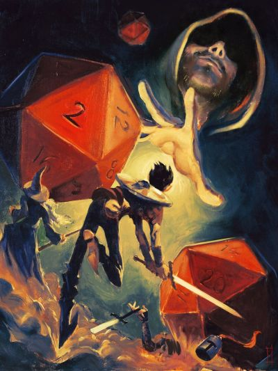

BEM VINDO AO PAPO DE MESTRE
Aqui você encontra um panorama completo dos mais diversos sistemas de RPG brasileiros — dos clássicos aos mais recentes.
Nosso objetivo é reunir informações, regras básicas e particularidades de cada sistema, ajudando jogadores e mestres a escolher o estilo de jogo que mais combina com suas mesas.
Explore os resumos disponíveis, compare mecânicas, descubra novos universos e encontre o sistema perfeito para sua próxima aventura!
